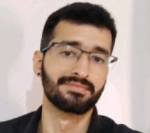
Israel Pereira de SouzaPhD student
Course materials and academic mentoring at the Institute of Computing, Universidade Federal Fluminense.
Segundas e quartas, 18h–20h · Material em português
Sextas, 14h–18h · Material em português
Páginas das disciplinas atualizadas para o novo layout. Materiais adicionais serão disponibilizados conforme o andamento do semestre.

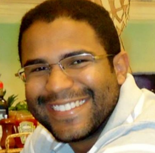
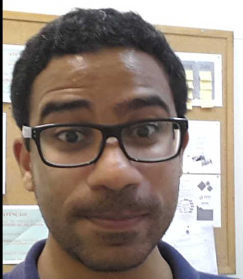
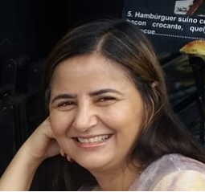
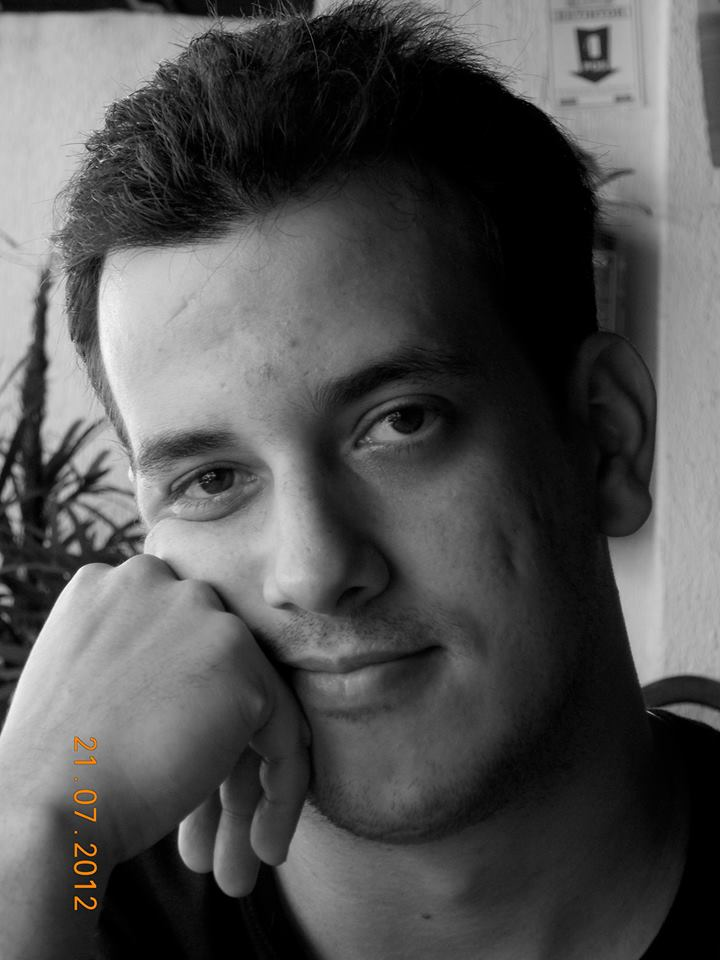
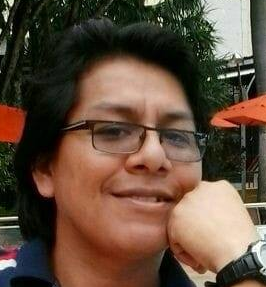
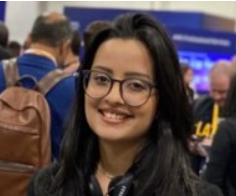
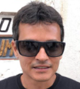
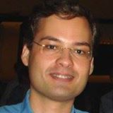
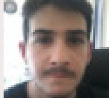
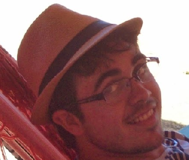
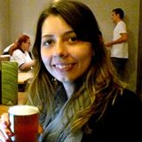
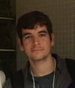

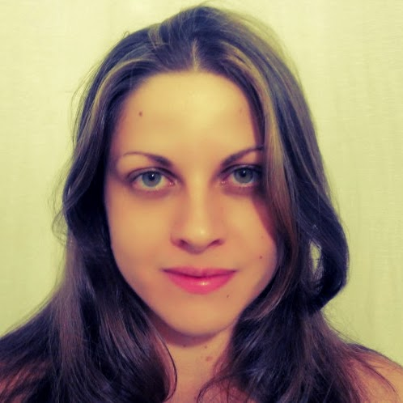
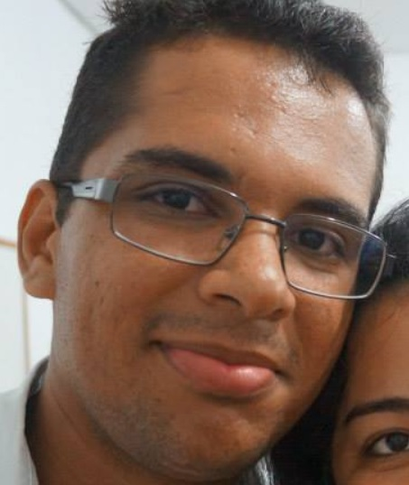